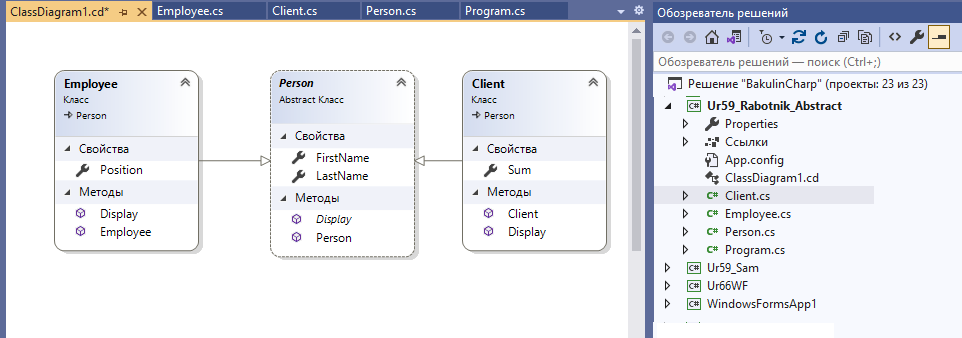
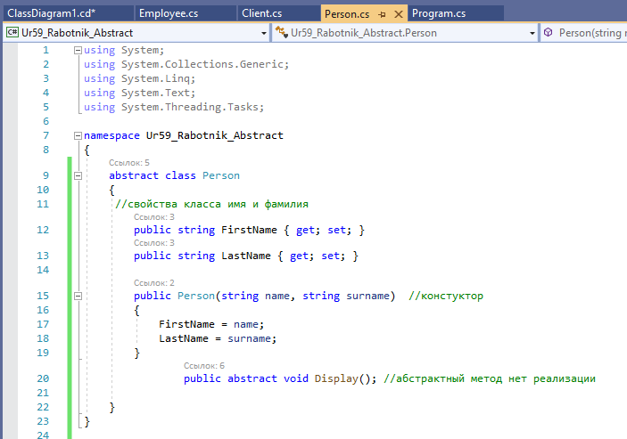
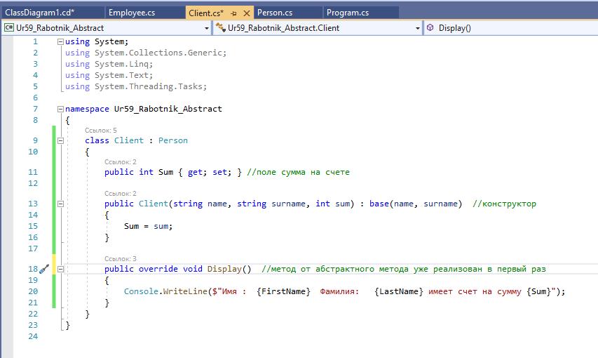
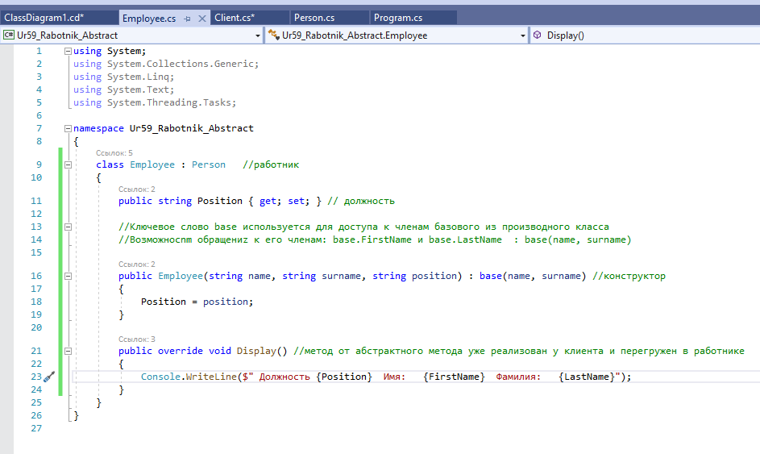

| Простой пример работы в C# с абстрактными классами | ||
| Назад | ||
|
абстрактный класс Person и два класса - наследника от него: Client и Employee Диаграмма классов:  Примечание: Описание класса Person  :Описание наследуемого класса Клиент  Описание класса работник 
Создание экземпляров классов и вызов переопределенных методов в программе:
|
||
| Конспект подготовлен Бакулиным А. М. 2022 год. | ||